Что находится в папке
Две серии по 4 карточки для работы с детьми 5–7 лет. Карточки помогают увидеть движение в изображении, определить его характер и передать увиденное собственным движением.
01 «ПОКАЖИ ДВИЖЕНИЕ» — 4 карточки
Ребёнок находит в картине то, что может двигаться, и передаёт движение жестом, руками или всем телом.
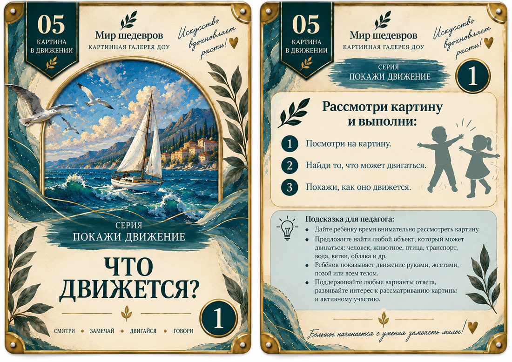
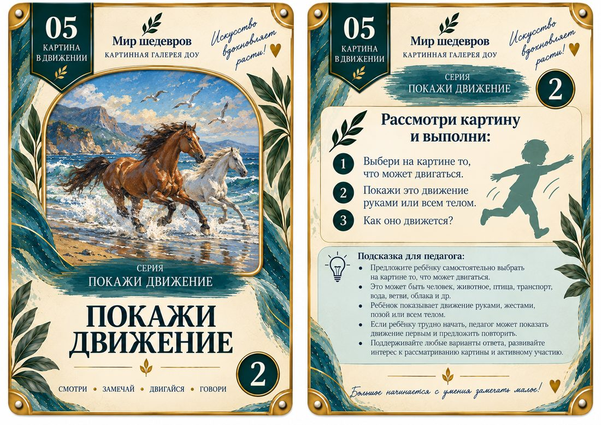
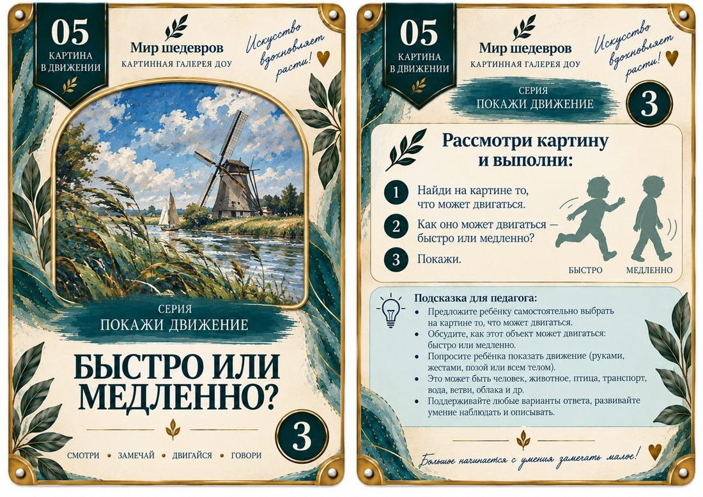
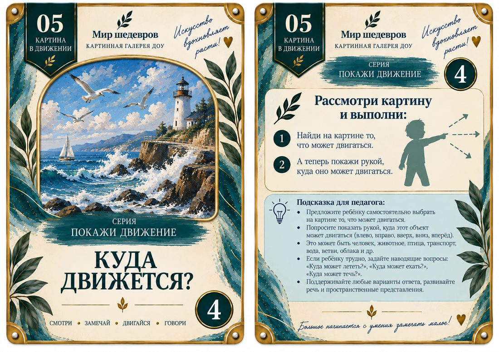
02 «НАЙДИ ДВИЖЕНИЕ» — 4 карточки
Ребёнок внимательно рассматривает картину, находит признаки движения и объясняет, что помогло их заметить.
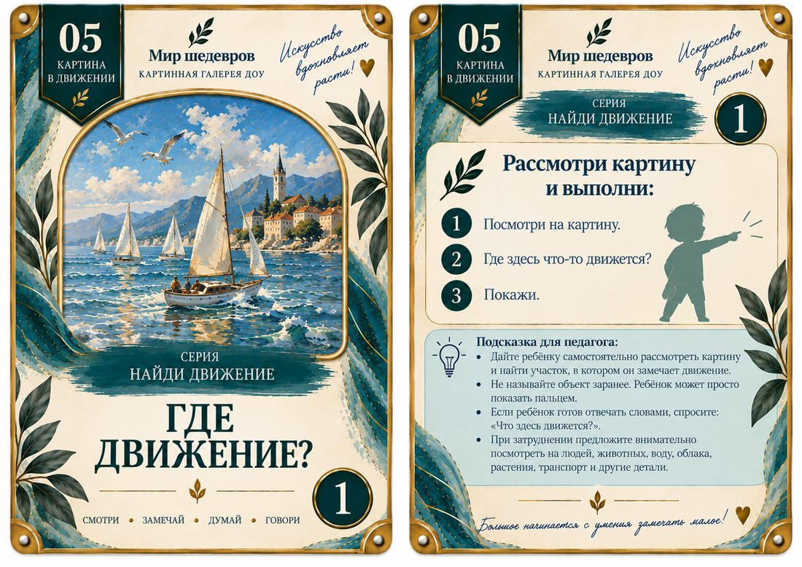
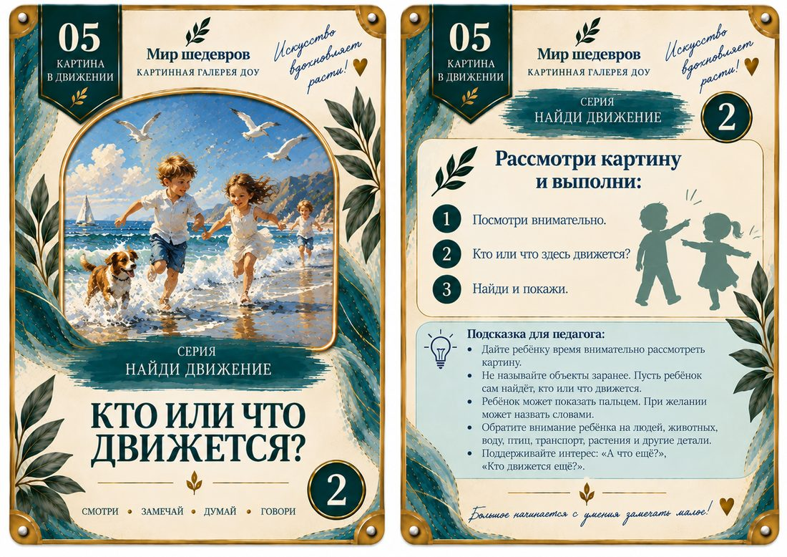
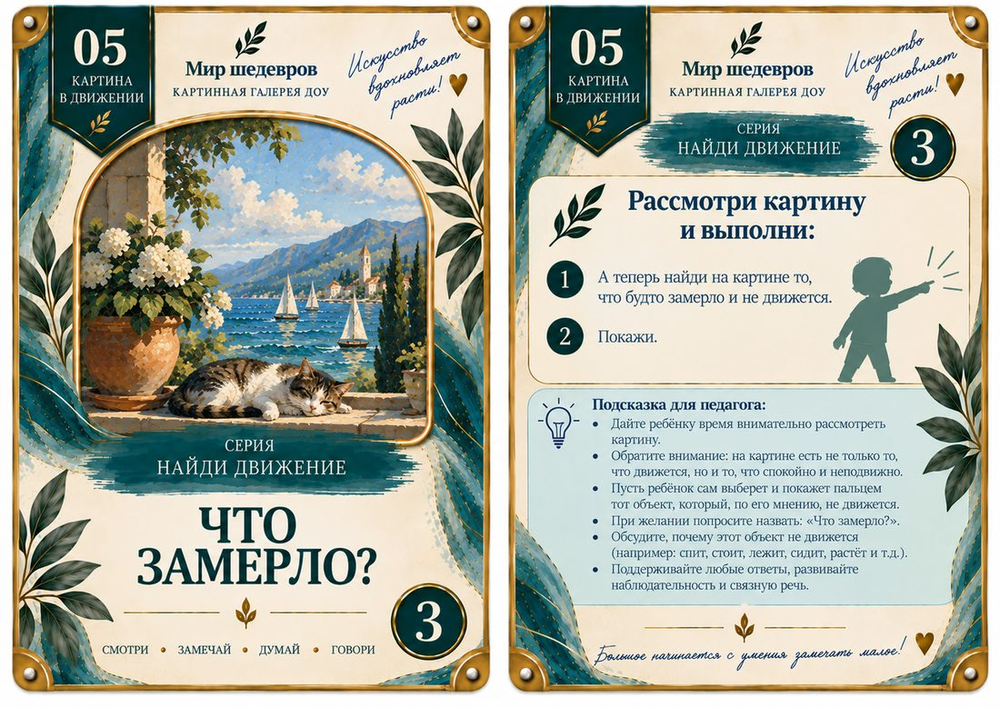
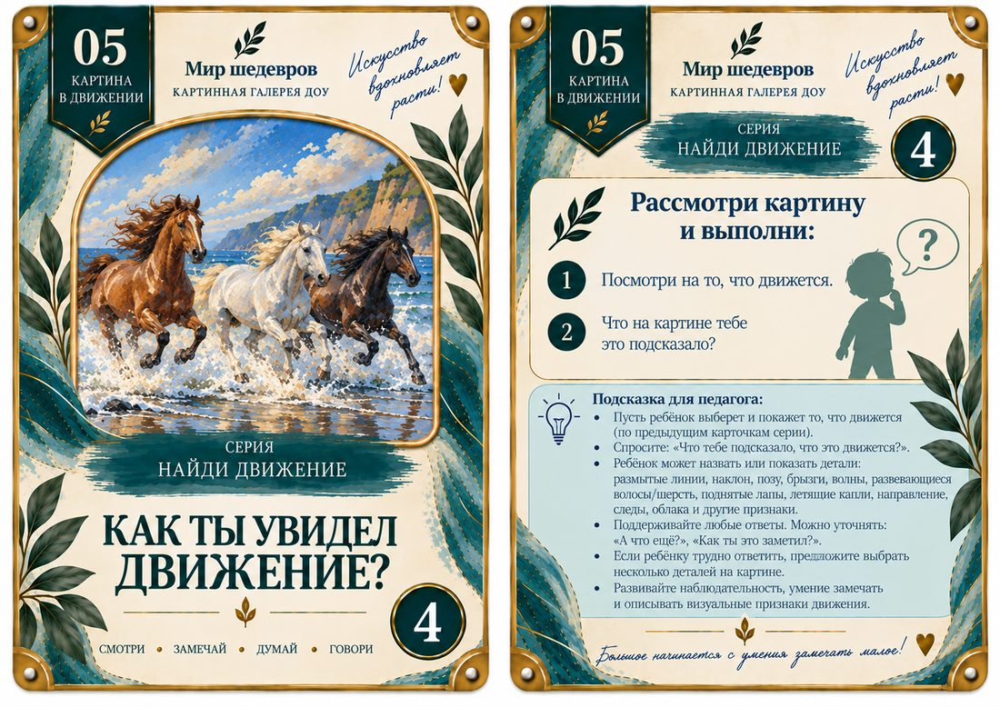
Педагогу
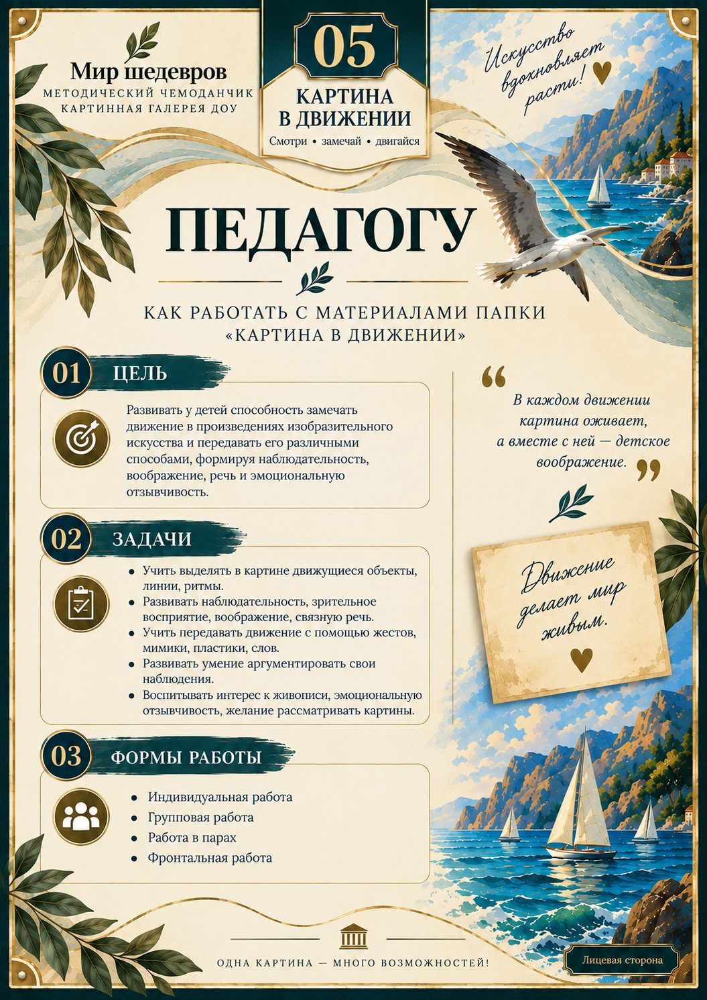
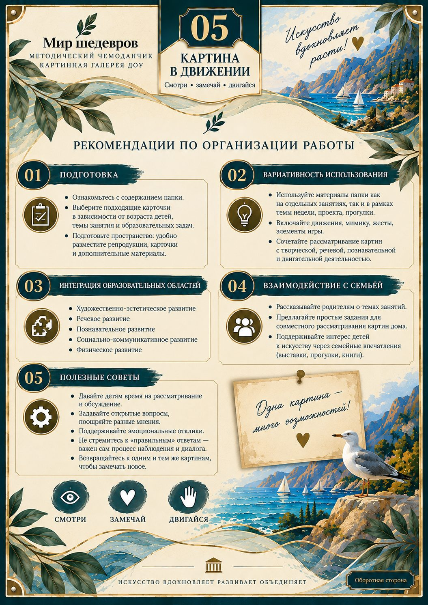
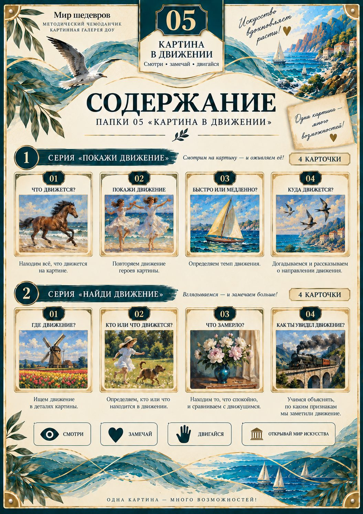